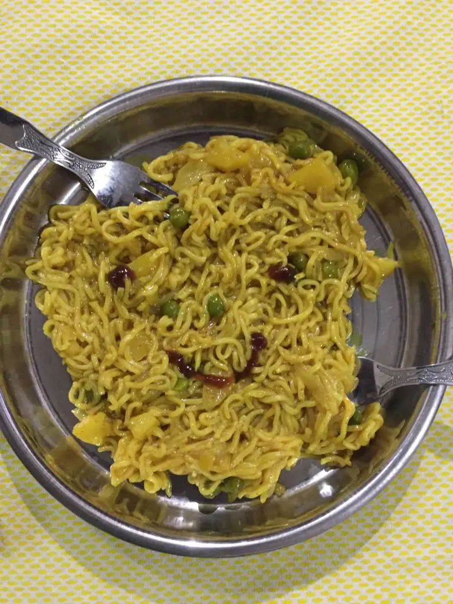

How to Make Veggie Maggie

The Perfect Midnight Snack
Ingredients:
- 1 pack Maggi noodles
- 1 cup water
- 1/4 cup chopped onions
- 1/4 cup chopped tomatoes
- 1/4 cup chopped capsicum
- 1/4 tsp turmeric
- 1/4 tsp red chili powder
- 1 tsp oil or butter
- Maggi tastemaker
Steps:
- Heat oil in a pan.
- Add onions, sauté for a minute.
- Add tomatoes and capsicum, cook till soft.
- Add turmeric and chili powder.
- Add 1 cup water and bring to boil.
- Add noodles and tastemaker.
- Cook for 2-3 minutes, stir occasionally.
- now your mid night cravings are no more